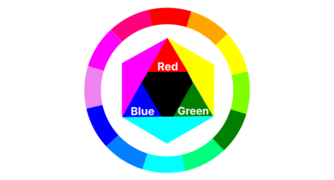
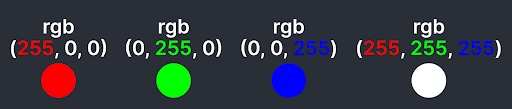
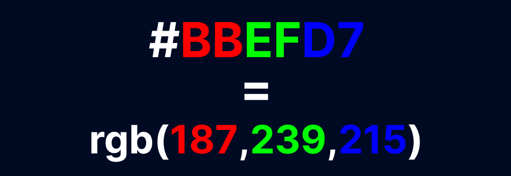

Cor é um dos ingredientes mais importantes no design.
AS cores mais comuns têm nomes. Você vai aprender a usar cores com nomes, e até sem nomes, usando modelos de cores.
h1 {
color: blue;
}

Um modelo de cor é uma forma de representar e recriar cores reais usando código. RGB é um dos modelos de cor mais usados.
O modelo RGB cria cores combinando diferentes quantidades (intensidades) de vermelho, verde e azul; cada uma variando de 0 a 255.
Ajustando os níveis de vermelho, verde e azul, quase qualquer cor pode ser produzida.
p {
color: rgb(127, 255, 212);
}
Cores no modelo RGB também podem ser representadas como o código HEX.
Os códigos HEX começãm com um símbolo de hash #, seguido por 3 pares de caracteres, cada um representando a intensidade de vermelho, verde e azul, respectivamente.
Cada caracteres em um código HEX pode ter um dos16 valores possíveis, variando de 0 a 9 e estendendo-se até as letras A a F.
Cada par varia de 00(menos intenso) a FF(mais intenso).
Representar números no sistema HEX é mais eficiente. Apenas 2 dígitos por cor são necessários.